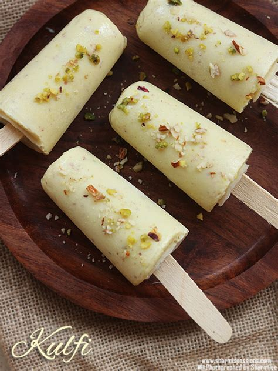

KULFI

Description
Kulfi is a popular Indian dessert made with condensed milk, cream, and a
variety of flavorings. It is often described as a denser and creamier
version of ice cream, with a texture that is smooth and creamy but not
quite as soft as traditional ice cream. Kulfi is traditionally made in
small, cone- or barrel-shaped molds and is served in slices or as
popsicles. It is a popular dessert in many parts of India, particularly
during the hot summer months, and is enjoyed by people of all ages. Some
popular flavors of kulfi include mango, pistachio, and cardamom.
Ingredients
- 2 cups whole milk
- ½ cup condensed milk
- ¼ cup dry milk powder
- 2 teaspoons white sugar, or to taste (Optional)
- ½ teaspoon ground cardamom
- 1 pinch saffron threads
- ¼ cup chopped pistachio nuts
Steps
-
Stir the milk, condensed milk, and dry milk powder together in a
heavy-bottomed pan and bring to a boil. Add the sugar, cardamom, and
saffron to the boiling milk; reduce heat to low and simmer, stirring
frequently, for 10 minutes. Remove from heat and allow to cool to room
temperature; fold the pistachio nuts into the mixture.
-
Pour the mixture into popsicle molds and freeze until solid, about 1
hour